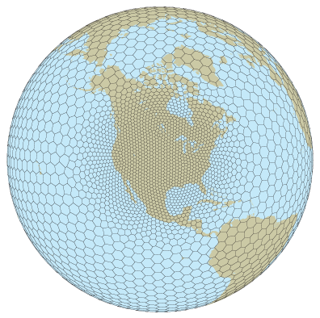

MPAS Atmosphere 1.0.0 Release |
The MPAS Atmosphere 1.0.0 was released on 3 June 2013.
MPAS Atmosphere 1.0.0 release notes
Configurations for idealized test cases NCL scripts for plotting MPAS-Atmosphere output
|
 A variable resolution MPAS Voronoi mesh |